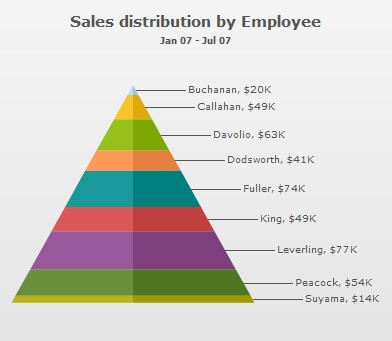
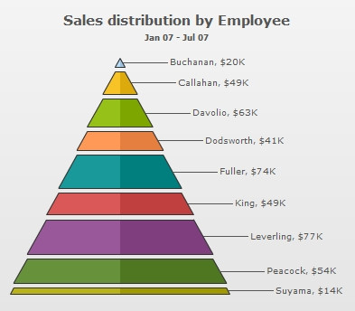
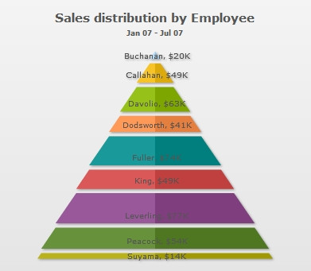
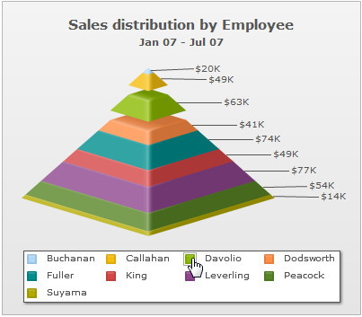
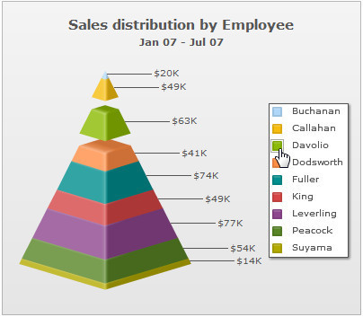
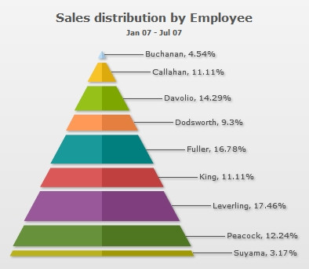
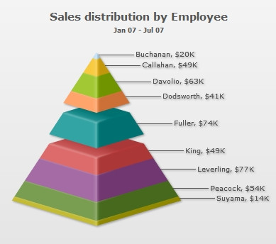

| Configurations |
You can also configure various properties of the pyramid chart. Here, we'll see a few of them:
Now, see each one of them one by one. |
| Drawing 2D pyramid |
When you draw a normal pyramid chart, it renders as 3D, with a context menu allowing you to switch between 2D & 3D mode. However, if you intend to render the pyramid as 2D itself, you can set: |
|
This will result in: |
|  |
| See it live! |
When in 2D mode, you can customize the border properties of the pyramid using: |
|
This will result in: |
|  |
| Applying shadow to 2D pyramid |
| Using Styles, you can add shadow to 2D pyramid chart as under: |
<chart caption="Sales distribution by Employee" subCaption="Jan 07 - Jul 07" numberPrefix="$" is2D="1" isSliced="1" showPlotBorder="1" plotBorderThickness="1" plotBorderAlpha="100" plotBorderColor="FFFFFF"> {
"chart": {
"caption": "Sales distribution by Employee",
"subcaption": "Jan 07 - Jul 07",
"numberprefix": "$",
"is2d": "1",
"issliced": "1",
"showplotborder": "1",
"plotborderthickness": "1",
"plotborderalpha": "100",
"plotbordercolor": "FFFFFF"
},
"data": [
{
"label": "Buchanan",
"value": "50000"
},
{
"label": "Callahan",
"value": "49000"
},
{
"label": "Davolio",
"value": "63000"
},
{
"label": "Dodsworth",
"value": "41000"
},
{
"label": "Fuller",
"value": "74000"
},
{
"label": "King",
"value": "49000"
},
{
"label": "Leverling",
"value": "77000"
},
{
"label": "Peacock",
"value": "54000"
},
{
"label": "Suyama",
"value": "14000"
}
],
"styles": {
"definition": [
{
"type": "shadow",
"name": "myShadow"
}
],
"application": [
{
"toobject": "DATAPLOT",
"styles": "myShadow"
}
]
}
}
|
| This will result in: |
| Showing labels at center (in 2D Mode) |
In 2D pyramid chart, you can opt to show the pyramid labels at center of the chart using: |
|
This will result in (with shadow filter applied to data labels): |
|  |
| Showing labels in legend |
|
Starting FusionWidgets XT, you can choose to place the labels in a separate legend box. You can click on the legend items to slice in and slice-out the respective pyramid item as shown below:  To show the legend (and hide the labels beside the pyramid) set: <chart .. showLegend='1' showLabels='0'...> { "chart" : {... "showlegend" : "1", "showlabels": "0" ... } }
You can also place the legend at the right by setting the value of the legendPosition attribute to RIGHT: <chart .. showLegend='1' legendPosition='RIGHT' showLabels='0'...> { "chart" : {... "showlegend" : "1", "legendposition": "RIGHT", "showlabels": "0" ... } }
The legend will be placed on the right as shown below:  |
| Showing values as percentage |
You can opt to show the values in pyramid chart as percentage by setting: |
|
This will result in: |
|  |
| Slicing out individual pyramid slices |
You can slice out individual pyramid slices by setting: |
|
This will result in (here, we've sliced Fuller's slice): |
|  |